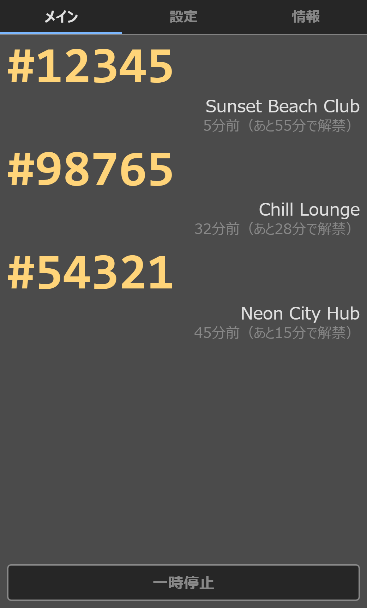
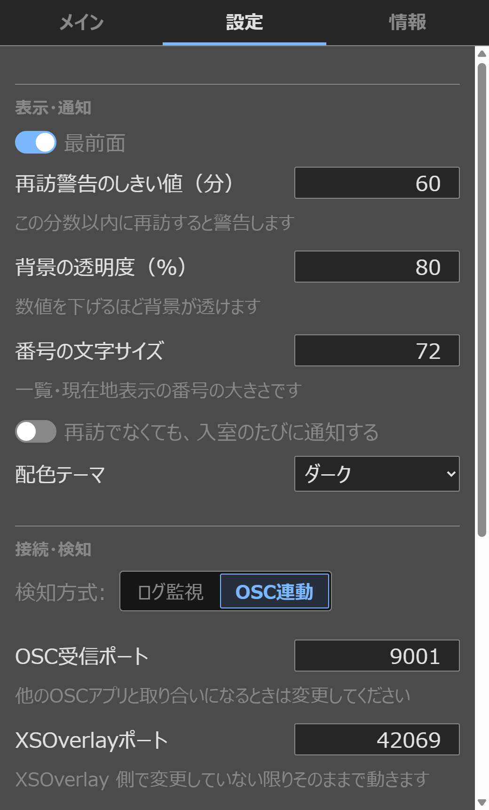

Windows only
This is a Windows app. It needs the WebView2 runtime, which comes preinstalled on Windows 11 and updated Windows 10.
Always-on Windows desktop app
When you're hopping between public VRChat instances, instance numbers are just digits — "#12345" doesn't tell you whether you were just there. VRC PublicWalker watches your VRChat logs, keeps a visit history, and warns you — in an always-on-top window and an optional XSOverlay notification — the moment you walk back into somewhere you've already been. On SteamVR, it can show the list on your wrist, too.
BEFORE YOU BUY
A few things worth knowing up front, so nothing catches you off guard.
This is a Windows app. It needs the WebView2 runtime, which comes preinstalled on Windows 11 and updated Windows 10.
The app reads the log files VRChat writes to work out which instances you've entered. It is intended for the Steam version of VRChat.
You don't need it — the desktop window works fine on its own. Connect XSOverlay (on Steam, sold separately) only if you want revisit notifications inside VR.
If you don't use SteamVR (for example, standalone Quest), the wrist list won't appear. To get revisit notifications inside VR in that case, you'll still need XSOverlay.
The app isn't code-signed, so Windows may show a SmartScreen warning. That's normal for independently published software, not a sign of a problem. See "Getting started" below for how to continue.
GET STARTED
Install it, then just launch VRChat.
Double-click the installer you downloaded from BOOTH (VRC_PublicWalker_x.x.x_x64-setup.exe) and follow the prompts. No administrator rights are needed. Afterwards, launch it from the Start menu as "VRC PublicWalker".
That's normal. Click "More info", then "Run anyway" to continue. If your antivirus reacts, it's a false positive for the same reason.
Before or after launching VRC PublicWalker — either order works. Any log already on disk at launch is picked up automatically.
The instance number appears in the window's list. Walk into the same instance again, and you'll get a notification.
Using VR gear? If you want to notice a revisit while wearing your headset, connect it to XSOverlay (Steam, sold separately). On SteamVR, just start SteamVR and the list appears on your wrist (right wrist by default).
HOW IT WORKS
You don't have to do anything — this all runs in the background.
It reads the logs VRChat writes and records where you went (world name and instance number) and when. It never modifies VRChat's files.
Walk into the same instance within your set time (20 minutes by default) and an amber banner appears in the window. If you use XSOverlay, you also get a notification inside VR.
Records are saved on your own PC. The time rule keeps working even after VRChat's logs are gone or you restart the app.
When the warning appears: Detection happens at the moment you start entering an instance. So when a warning shows up, you'd head to a different instance — and the surest habit is to compare the list's numbers against the world list before you join.
FEATURES
VRC PublicWalker watches your VRChat logs and records every visit. When you walk back into an instance you've already visited, it tells you — in the window, over XSOverlay (optional), and on your wrist in SteamVR.


Your current location and a list of recently visited instances stay in an always-on-top window. Instance numbers are shown large, so you can compare them against a world list at a glance.
Walk into an instance you've already visited, and the window shows "#12345 was also visited 5 min ago." Optional XSOverlay notifications mean you'll notice even in VR — and you can switch off just the XSOverlay part if you like.
Change "how many minutes counts as a revisit" anytime (1–1440 minutes, default 20). Change it with "Revisit warning threshold (min)" on the Settings tab.
Leave a world, and the stay-time counter stops while the number dims. You can tell at a glance whether you're still there.
Choose OSC sync, which catches the moment you move using VRChat's OSC output, or Log watching, which polls your logs on an interval. Switch anytime with a radio button.
Your visit history keeps living on your PC. VRChat's own logs are deleted after 24 hours, but your records stay put, so the revisit rule survives an app restart.
Choose from seven color themes, and fine-tune the number size and background opacity — handy for VR-overlay-style setups too.
The interface is available in Japanese, English, Korean, Simplified Chinese, and Traditional Chinese. Switch anytime from the Settings tab.
The only destination is the official site, and all it asks for is the latest version number. No records or personal information are sent. Everything else stays on your own PC, between the app and VRChat, XSOverlay, and SteamVR.
While SteamVR is running, the back of your chosen wrist shows where you are plus a list of visited instances (up to 8, newest first). Just turn your hand like you're checking a watch.
Launch the app once while SteamVR is running, and from then on it starts automatically with SteamVR.
Press the update-check button on the About tab to see whether a new version is out. The automatic check at launch can be turned off in Settings.
STEAMVR
While SteamVR is running, the list appears on the back of the wrist you choose (right wrist by default). Just turn your hand like you're checking a watch — no need to take your headset off.
With both running, the app registers itself with SteamVR within a few seconds and auto-start is turned on. If you only use desktop mode without SteamVR, nothing is registered.
The app launches along with SteamVR, and the usual window appears on your desktop too. You switch this on or off in SteamVR's settings, not in the app.
About controllers: Default bindings are included for Index, Quest/Rift (Touch), Vive, Windows Mixed Reality, HP Reverb G2, and Vive Cosmos controllers. Other controllers work too once you assign the actions in SteamVR's "Controllers" settings.
CONTROLS
The settings you'll actually want to change live together in the Settings tab.


FAQ
Common questions, before and after purchase.
diagnostics.log from the install folder via a BOOTH message. Identifying details are masked, so you can send it as is.history.db somewhere else first. If you used SteamVR, turn off this app's auto-start in SteamVR's settings before uninstalling.NOTES
Detection works by reading the log files VRChat writes, so changes to VRChat's own logging could break it.
Grabbing the panel (grip) or pressing its buttons (trigger) may also be passed to VRChat at the same time. If that bothers you, change the bindings in SteamVR's controller settings.
The only destination is the official site. Everything with VRChat, XSOverlay, and SteamVR stays on your own PC. You can turn off the automatic check at launch in Settings.
For SteamVR support, Valve Corporation's openvr_api.dll (BSD-3-Clause license) is included. The license text is in the Terms of Use that ships with the app.